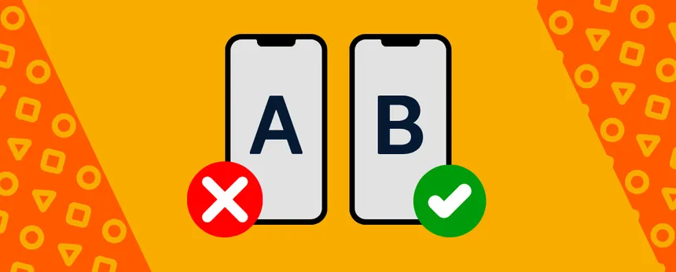
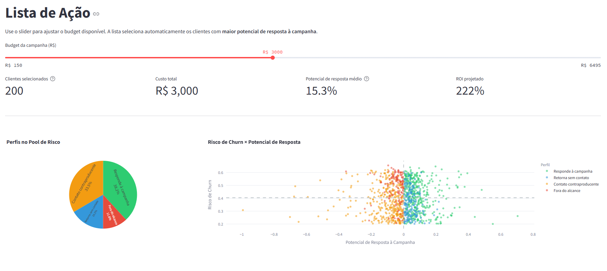
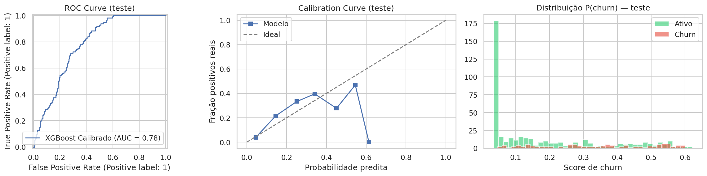
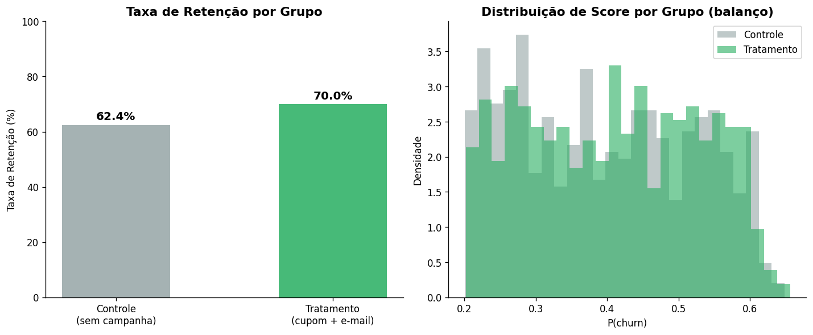
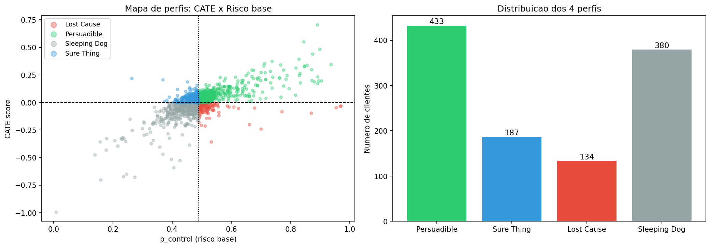
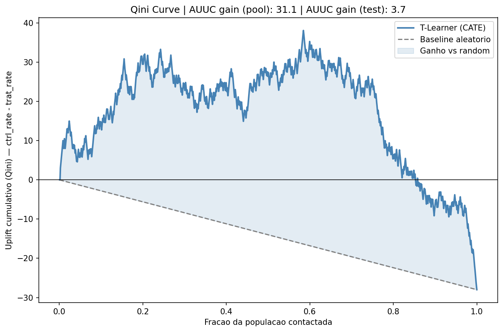

Churn Prediction + A/B Testing + Uplift Modeling


Lista de ação do dashboard: clientes ranqueados por CATE com filtro de budget e download Excel.
01. Visão Geral
E-commerce B2C com 4.300 clientes e ticket médio de R$ 350 enfrentava um problema de retenção: clientes sem compra há 90 dias raramente retornavam espontaneamente, e o budget de campanha era fixo — R$ 15 por contato (cupom 10% + e-mail).
O projeto entrega um pipeline de 3 camadas: Camada 1 identifica quem está em risco de churn, Camada 2 valida estatisticamente se a campanha funciona, e Camada 3 descobre para quem a intervenção realmente muda o comportamento. Cada camada responde uma pergunta que a anterior não consegue.
02. Camada 1 — Churn Prediction
O modelo foi treinado com XGBoost + Optuna (50 trials) + CalibratedClassifierCV (sigmoid). A calibração foi necessária porque a versão isotonic gerava plateaus de score no top-10, tornando o ranqueamento por budget inoperável.
O dataset passou por um filtro crítico: remoção de one-time buyers (frequency < 2) e quasi-one-time buyers (lifetime = 0). Sem o filtro, o modelo aprendia que "clientes com uma compra churnam" — trivialmente verdadeiro mas irrelevante para retenção. O churn rate caiu de 33,4% para 20,3%, refletindo um target genuíno.
O threshold operacional foi definido em 0,20 pela relação FN/FP = 7×: um falso negativo custa R$ 350 (receita perdida), um falso positivo custa R$ 15 (campanha inútil). Threshold 0,20 entrega recall 74% e pool de 1.134 clientes.

Curvas de avaliação do modelo: ROC-AUC 0,776 no teste, gap de 0,046 entre treino e teste.
03. Camada 2 — A/B Testing
O pool de 1.134 clientes em risco foi dividido aleatoriamente em 567 controle / 567 tratamento. O experimento valida o design estatístico e o poder amostral — os outcomes foram gerados probabilisticamente com base em benchmarks de campanha e-mail/cupom para e-commerce.
Resultado: χ²=6,96, p=0,008 (significativo, α=5%). A campanha reduziu o churn de 37,6% para 30,0%, um lift relativo de 20,2%. O impacto financeiro por ciclo: custo R$ 8.505 → 43 churners evitados → receita R$ 12.900 → ROI 51,7%.

Resultado do teste A/B: redução de churn estatisticamente significativa com IC95% [2,1%, 13,1%].
04. Camada 3 — Uplift Modeling (T-Learner)
O T-Learner treina dois modelos separados — um no grupo controle e outro no tratamento — e calcula o CATE individual: P(churn|controle) − P(churn|tratamento). CATE positivo = campanha reduz churn naquele cliente.
XGBoost foi descartado por overfitting severo com n≈450/grupo (gap 0,20–0,30). Substituído por Logistic Regression (C=0,5, class_weight='balanced'), com gap final de 0,059 — aceitável para esse tamanho de amostra.
Os 1.134 clientes do pool foram segmentados em 4 perfis por dois eixos: CATE (responde à campanha?) e risco de churn (P(churn|controle)):
- Persuadible (433): alto risco + CATE positivo — alvo principal
- Sure Thing (187): retornaria mesmo sem campanha — baixa prioridade
- Lost Cause (134): alto risco mas não responde ao tratamento
- Sleeping Dog (380): CATE negativo — campanha aumenta o churn. Não contatar.

Segmentação dos 1.134 clientes em 4 perfis pelo eixo CATE × risco de churn.

Qini Curve: AUUC gain +3,68 no test-only — o modelo prioriza Persuadibles melhor que seleção aleatória.
no teste
no pool amplo
Persuadibles
05. Dashboard & Scoring Pipeline
O pipeline de scoring (score_campaign.py) roda end-to-end sem dependência de banco de dados: lê o parquet local, aplica feature engineering, modelo de churn, uplift T-Learner e gera a lista ranqueada de contatos em CSV.
O dashboard Streamlit foi desenvolvido para o time de negócio — sem jargão técnico. O slider de budget filtra automaticamente os top-K Persuadibles e disponibiliza download em Excel (formatado) e CSV.
Ver Dashboard ↗ Ver no GitHub ↗Leia mais projetos

.png)

👋 Entre em contato